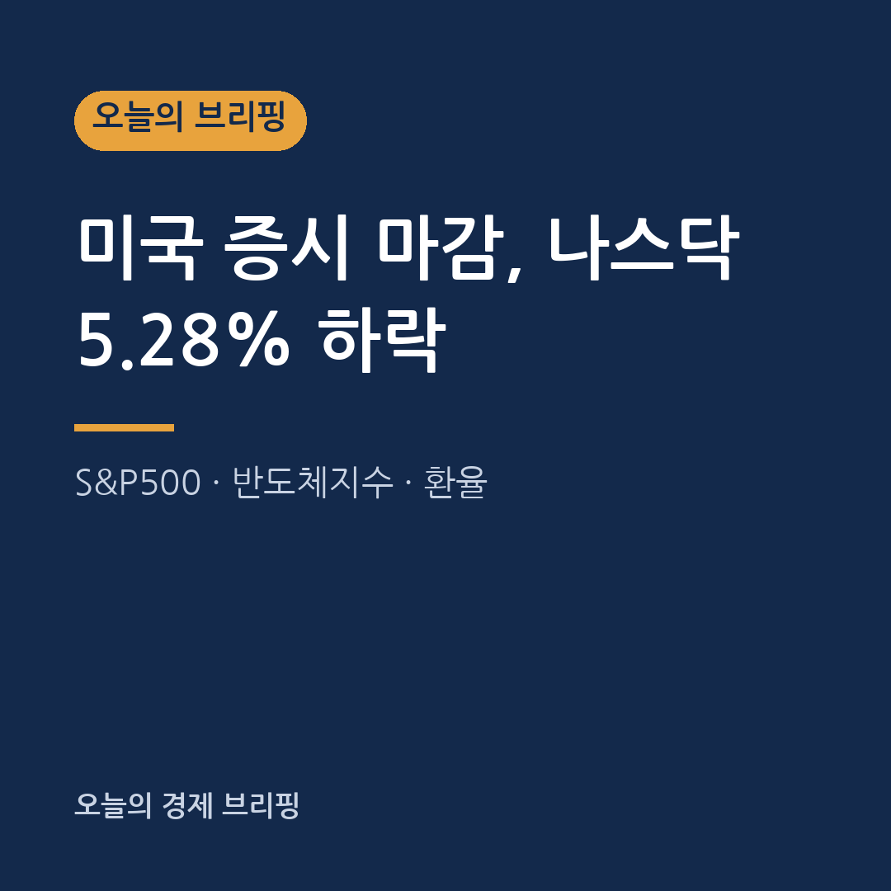
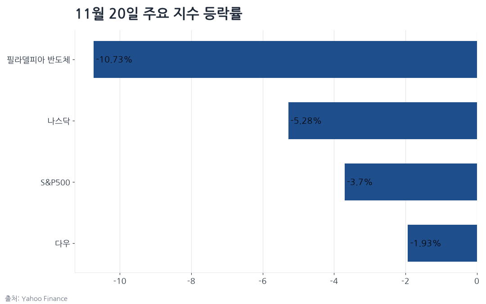

2026-11-21-0815-tistory 발행 키트 · 이 페이지는 검색에 노출되지 않습니다.
제목
카테고리
오늘의 브리핑태그
본문 (그림·표 포함)
휴대폰 블로그 앱에서는 그림이 같이 붙지 않을 수 있어요. 그때는 [글자만 복사] 후 아래 이미지를 저장해 [그래프1]·[표1] 자리에 첨부하세요.

미국 증시는 11월 20일(현지시간) 기술주 매도가 이어지며 3대 지수가 모두 하락했습니다. 나스닥은 5.28%, S&P500은 3.7%, 다우는 1.93% 내렸고, 필라델피아 반도체지수는 10.73% 급락했습니다. 하락의 중심에는 AI 투자 수익성에 대한 우려가 있었습니다.
▶ 배경: AI 관련주 쏠림과 상장 이슈
최근 시장은 AI 관련 대형 기술주가 주도해 왔습니다. 이런 상황에서 AI 투자 부담이 실적보다 앞서간다는 시각이 커지며 매도 압력이 높아졌다고 언론은 전했습니다.
전날 상장한 앤트로픽은 상장 이틀째 8.5% 하락했고, 장중 한때 공모가 수준까지 내려왔습니다. 엔비디아가 14% 떨어졌다는 보도도 있었습니다.
▶ 핵심 내용: 지수별 마감 수치
미국 3대 지수·반도체지수 마감
| 지수 | 종가 | 전일 종가 | 등락률 |
|---|---|---|---|
| 나스닥 | 22,617.73 | 23,879.2 | -5.28% |
| S&P500 | 6,910.39 | 7,175.83 | -3.7% |
| 다우 | 48,147.33 | 49,097.06 | -1.93% |
| 필라델피아 반도체 | 8,408.59 | 9,419.72 | -10.73% |
출처: Yahoo Finance
세 지수 가운데 기술주 비중이 높은 나스닥의 낙폭이 가장 컸습니다. 연합뉴스는 다우와 S&P500도 조정 국면(고점 대비 10% 이상 하락한 구간)에 진입했다고 보도했습니다.

▶ 영향: 금리·환율·유가
미국 10년물 국채금리는 4.91%로 전일 5.05%에서 0.14%포인트 내렸습니다. 위험자산에서 빠진 자금이 채권으로 이동한 흐름이라는 해석이 시장 보도에 나왔습니다.
원·달러 환율은 1,346.13원으로 전일보다 15.73원(1.18%) 올랐습니다. WTI 유가는 83.62달러로 0.49% 상승했습니다.
금리·환율·유가
| 항목 | 11월 20일 | 전일 | 변동 |
|---|---|---|---|
| 미 국채 10년물 금리(%) | 4.91 | 5.05 | -0.14 |
| 원·달러 환율(원) | 1,346.13 | 1,330.4 | +15.73 |
| WTI 유가(달러) | 83.62 | 83.21 | +0.41 |
출처: Yahoo Finance
▶ 확인할 점
첫째, 반도체 업종이 큰 폭으로 내린 만큼 국내 반도체 대형주의 개장 직후 반응을 확인할 필요가 있습니다. 둘째, 환율이 하루 만에 15원 넘게 오른 점이 외국인 수급에 어떻게 반영되는지 볼 필요가 있습니다.
셋째, 나스닥이 코로나 이후 최악의 한 주를 보냈다는 평가가 나온 만큼, 다음 거래일에도 AI 우려가 이어지는지가 관건입니다.
▶ 정리
1. 나스닥 5.28%, S&P500 3.7%, 다우 1.93% 하락, 반도체지수는 10.73% 급락했습니다.
2. 원인은 AI 수익성 우려와 기술주 매도이며, 앤트로픽도 상장 이틀째 약세였습니다.
3. 10년물 금리는 4.91%로 하락, 원·달러 환율은 1,346.13원으로 상승했습니다.
이미지 (개별 복사·저장)
출처 (본문 맨 아래에 붙여넣기 권장)
- 연합뉴스, 나스닥 기술주 매도 급락·다우·S&P500 조정 진입 기사, https://www.yna.co.kr/view/AKR20261121009252072 - 연합뉴스, 앤트로픽 상장 이틀째 급락 기사, https://www.yna.co.kr/view/AKR20261121011100091 - 뉴스투데이, 실적보다 커진 AI 거품론 뉴욕증시 기사, https://news.google.com/rss/articles/CBMiXkFVX3lxTE1QeXdvM21uNFpSZUY3eUpRNU9wc0pVLWtwUlkzWEk0UXZ5d0NYTFQyR1hXRkxqOWdjV2pCM01IQjBBYkJzNGZMdkpkcUV4dXhOZWdfRGZDMndLR281U2c?oc=5 - 글로벌이코노믹, 뉴욕증시 AI 쇼크 엔비디아 하락 기사, https://news.google.com/rss/articles/CBMiiAFBVV95cUxNLUo1QS0zMjJRbS1kWVVVNVcyTHVfbXN2eGtnMEhkaGlvNUpxY2xQTWVTcDlaOVhNTy1mTjlJcGp5eVcxZ0xzVkVvU2VvUHF2a0dVd3pGUGNPdWNLRTJabndnekpCbTMtNXlkeHVjZmpxZDh2cjZzdVRqdmsySUNkRmdYd3FHZG0y?oc=5 - KB Think, 뉴욕마켓워치 나스닥 한 주 하락 기사, https://news.google.com/rss/articles/CBMickFVX3lxTFBSUG9lMWhrNjRRWUhab01JZjFtcFhSUERZbWtEOUUzUzlULVBCbGVMeVN0bEFCU3RmOG9Ia1RiMzVTUkhoYkN3WVdCeWV5bEJLRjRjNHlWLVFaUmx4dVE4cjJNSTloLXpzeFlrNno2dGg5dw?oc=5 - 시세: Yahoo Finance